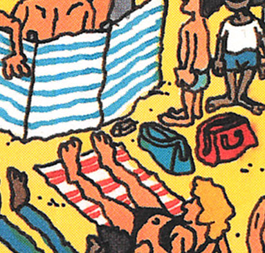
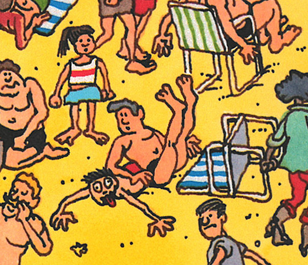
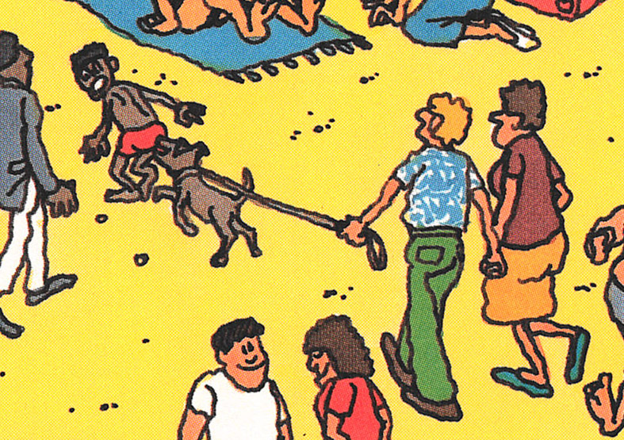
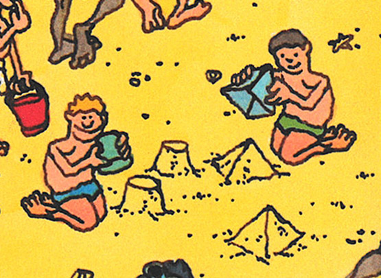
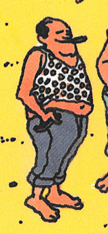

Where's Waldo: Scene 02 - On the Beach
1993 Mini Edition
Gameplay Changes
- Characters were added to make Waldo more obscured
- Wenda, Woof, and Waldo Watchers were added
Cosmetic Changes
Some cosmetic changes were made in this edition:
- Waldo's character design was updated
- All the water lines were redrawn to make them more bold
A random object was added near the bags:

By the early 90s additional artwork had been added underneath the postcard, so the scene could be used
outside the context of the book (posters, puzzles, etc.):
You can see some of the new artwork peeking out of the bottom of the 1993 postcard. Hints of 4 new characters
and a beach ball are present. The woman on the bottom-left had her bare feet covered with shoes:
2012 Deluxe Edition
Political Correctness
The fat woman crushing a child was replaced with a man:


This Coppertone moment was removed. The dog is no longer biting the kid's butt:


This guy is no longer getting poked in the eye:
This woman's cleavage was reduced:
This woman's bikini is covering more of her butt, and her hand was moved to be less suggestive:
Racial Changes
The Arab kid building pyramids was replaced with a white kid, ruining the whole gag:

The races of these kids were swapped. The mischievous kids are now white instead of black:
The faces of two black people were redrawn, and an angry white woman was added alongside the angry black woman:
Drinking and Smoking
Drinking and smoking were removed:


Cosmetic Changes
The rolled up umbrella has more blue:
Shadows around this woman's face were removed: